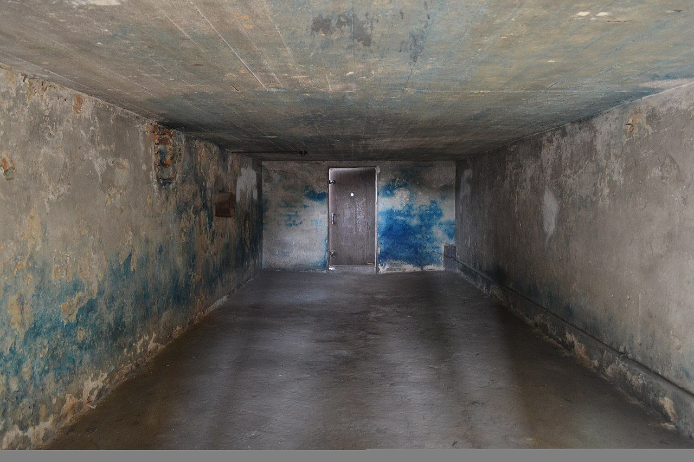

The Horrors of the German Concentration Camps

EN
The Horrors of the German Concentration Camps
EN
The German Concentration Camps
From 1933 to 1945, in Nazi Germany there were more than a thousand concentration camps as one of the most known camps is Auschwitz in Poland. The first camps were establish immediately after Adolf Hitler became Chancellor of Germany.  These camps were used to imprison political enemies, mainly members of the Communist Party of Germany. But when the Second World War began, the Nazis imprisoned people from the countries that Nazi Germany occupied. The people , who were imprisoned, ranged from children to adults. The Later on, Hitler decided to rid Europe of all Jews. Most Jews were persecuted and killed during the Holocaust. Next to the camps Germany set up factories to provide forced labor.
These camps were used to imprison political enemies, mainly members of the Communist Party of Germany. But when the Second World War began, the Nazis imprisoned people from the countries that Nazi Germany occupied. The people , who were imprisoned, ranged from children to adults. The Later on, Hitler decided to rid Europe of all Jews. Most Jews were persecuted and killed during the Holocaust. Next to the camps Germany set up factories to provide forced labor.
Aftermath
By the end of the war, Nazis had murdered about 6 million in the concentration camps. Many of them were killed in the gas chambers.  It is like a big room, which can accommodate hundreds of people and then all of them are killed with carbon monoxide, which is a poisonous gas. When Soviets discovored the camps, almost all the prisonors had already been removed, leaving only a few thousand alive. But in some camps there were thousands of corpses laying unburied around the camp and other inmates who were too weak to recover and died after some time. During the Nuremberg Trials after the war, many Nazi leaders were convicted of crimes against humanity. Some of them were executed.
Developer
Miroslav Mihaylov
Email: miro7543@gmail.com
Phone: +359-98-823-1814
Address: Veliko Tarnovo, Bulgaria
Developer
Petar Nedyalkov
Email: miro7543@gmail.com
Phone: +359-98-823-1814
Address: Veliko Tarnovo, Bulgaria
Help
Support
About us
Contact us
©All rights reserved 2021